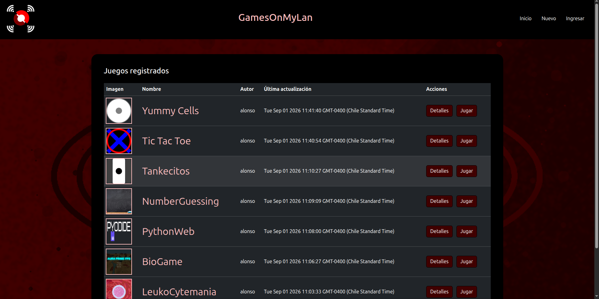

Manual de uso
Manual de uso de GamesOnMyLAN
Este manual explica cómo instalar, configurar y poner en marcha GamesOnMyLan en tu propio equipo, además de cómo resolver los problemas más comunes que pueden aparecer durante el proceso. Aquí encontrarás los requisitos previos que necesitas cumplir, los pasos de instalación en orden, y una sección de solución de problemas para los errores más frecuentes.
